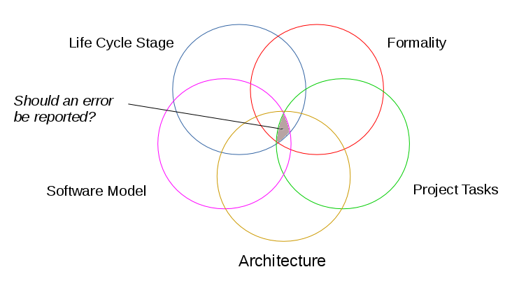

![[SparForte]](art/sparforte.png)
![[Banner]](art/header_cloud.png)
![[Top Main Menu]](art/menu_left.png) |
Intro | Tutorials | Reference | Packages | Examples | Contributors |
| | |||||||||||||||
| ||||||||||||||||
Script Tutorial 2: Intermediate Program ScriptsThe first script tutorial showed how to write a basic script. This tutorial discusses how execute statements and declarations can be organized. It also discusses how scripts can evolve and grow under SparForte. What Makes an Error?Unlike most programming languages, SparForte takes into account many factors before reporting an error in a program. 
For example, if you declare a variable but do not use it, it may be considered an error in certain contexts and not an error in others. Setting Your Architecture ConstraintsIf you are working in a medium to large size organization, you may have to work with architects and system administrators. Before starting your SparForte project, you can work with them to setup global architectural policy and configuration files. The global policy file is named "/etc/sparforte_policy". This file is for the architects. It only runs for scripts, and it contains pragmas (interpreter directives) that will apply to all projects on the server. The global configuration file is named "/etc/sparforte_config". This file is for system administrators. It only runs for scripts and it contains declarations of system resources that will apply to all projects on a server. For example, if you are working in a company that uses the Ada
programming language a lot, you may want to make all SparForte scripts
conform as closely as possible to Ada to make it easier to reuse program
code. You could make that a global policy by putting policy my_policy is
Example: A Simple /etc/sparforte_policy file
Structuring a ScriptSuppose you want to write a script for your project that does something useful, such as email someone with a "bob" login when there are files waiting in a certain directory. In SparForte, the following commands can do the job: num_files : integer := numerics.value( `ls -1 incomingdir | wc -l;` );
Example: A Simple Unstructured Script
But consider the following questions:
SparForte scripts can be more than a list of commands. SparForte has a number of features that allow scripts to be "well-structured" (or modular). Well-structured scripts are easier to read and debug. Here's an example of a well-structured SparForte script:
#!/usr/local/bin/spar
Example: A Simple Structured Script
The first part of this script is called the header. The header defines what kind of script this is, who wrote it, what version it is, and what restrictions or SparForte pragmas will apply to this script. The very first line of a script is the header line. This line begins with a "#!" at the top of the script, flush with the left margin. This character combination identifies the kind of script. UNIX-based O/S uses this information to start the right program to run the script. For SparForte scripts, this line contains the absolute pathname to where the SparForte shell resides. On many systems, this will be /usr/local/bin/spar. If you don't know the location of the SparForte shell, use the "whereis" command to find it: => whereis spar
Example: How to Find the Interpreter's Path
The header line is followed by annotations describing the purpose of
the
script and who wrote it. This is important in case your script needs to
be debugged in an emergency situation. The => help checkfiles The main script is wrapped in a procedure statement. The procedure statement divides the script into two sections: declaring variables and commands to run. Putting all the declarations for a script in one place makes it easy for someone to refer to them while reading the script. The commands are declared as command variables. A command variable is a special SparForte variable type: when a command variable is declared, SparForte verifies that the command exists and that it can be run. If the command cannot be run, SparForte stops the script before any command are executed. Without command variables, SparForte searches several directories for the command you want to run. If it can't find it, the script will stop with an error after executing part of the script. In this circumstance, it is difficult to determine where the script left off and what needs to be done to continue. Instead, command variables and other "sanity checks" should be put at the top of the script, or in the variable declarations, to ensure that when the script fails because of these kind of errors that the system will be left in a consistent state. After the main portion of the script runs (the part that does the
actual
work), the script should clean up after itself. Any open files should
be
closed or deleted and the script should return a status code to the
person
or program running the script. In this case, there are no files to
clean
up. All that is necessary is the Main ProceduresA subprogram is a piece of a program that is given a name.
Subprograms can be functions,
routines that return a value for an expression, or procedures that stand alone. A SparForte script
itself can be contained in a main procedure.
#!/usr/local/bin/spar
Example: A Script Enclosed in a Main Procedure Named "Bottles"
In this example, "Bottles" is the main procedure for the script. Variable declarations are placed between "is" and "begin" (in this case, there are none). Between the "begin" and "end" are the executable statements that the script will run. Procedures and FunctionsAdditional procedures and functions can be declared in declared in
the declaration section of the procedure.
#!/usr/local/bin/spar
Example: A Procedure Inside of a Main Procedure
#!/usr/local/bin/spar
Example: A Function Inside of a Main Procedure
There is another kind of subprogram, a declare block, that is discussed in the reference section. DesigningWhen starting a large project or a project involving more than one
programmer, SparForte has a design mode that is turned on
with the command line option In design phase mode, you can "spec out" (or create a high level
design) for your project. You can declaring types, global
variables and empty functions and procedures. Unfinished items can
be declared using the word
#!/usr/local/bin/spar
Example: Simple Example of Specing Out a Project
This design can be tested with $ spar --design --check design_example.sp In design mode, SparForte will focus on design errors and will ignore errors related to unfinished work. If no errors are reported, the design is good. While designing, you may have real-world concerns that impact how you design your project. For example, you may have multiple development teams, hardware limitations or quotas, areas of uncertainty or financial budgets. There are a set of pragmas dealing with the design constraints and affinities. They will alert you if you have conflicts in your design or if you are over your budget. These are especially useful on larger projects as move pieces of source code from one file to another. See the pragma reference page for more information. Explain your unfinished work with
Then run syntax checking to confirm that your overall design is well-crafted.
#!/usr/local/bin/spar
Example: Simple Example of Design Constraints and Estimating Work
The work report can be created with the
=> help -t design_example This is also a good time to choose any architectural pragmas to shape the design of your project. If you spec out your project instead of immediately writing executable code has several advantages:
Planning and EstimationWhether you are doing waterfall or agile software development, planning work and estimating time are standard practices. SparForte has planning and estimation features that integrate these practices into your projects. First, define your team members using teams.member records near the top of your project. Also create a team member for the team itself. This will be used to identify who is working on a task. If nobody is working on a task, just assign it to the team. Use
team : teams.member;
Example: Example of Work Estimation
In this example, get_stock_holdings is stubbed (that is, a place holder) that hasn't been completed. It's a medium priority task that has an estimated effort of 5 story points. It has been assigned to the team because no one has started the work. If Fred Smith starts to work on this function, he assigns it to himself. There's a ticket in the work tracking system, so he adds the ticket id to the pragma. pragma todo( fred_smith, "create get_stock_holdings", work_measure.story_points, 5, work_priority.level, 'm', "DEV-3742" ); There are several other work measures and priority types. You can choose the one most suited to your project. SparForte verifies the syntax, data types and values in the todo. Once a task is completed, Fred will delete the pragma todo. In testing or maintenance modes, SparForte will confirm that all todo's
have been completed and the project is ready for release. (Low priority
tasks can optionally be permitted with The team may be working on a long-term project with interim releases. In these releases, there will be todo's that are not finished. In this case, set the size estimate to unknown. SparForte will treat these as tasks that have not been started and will not ignore these for release purposes.
#!/usr/local/bin/spar
Example: Simple Example of Specing Out a Project
The => help -t design_example.sp Team Collaboration During DevelopmentSparForte has features for team communication. Acting like a messenging system within the project, team members can propose changes, request assistance and so forth. This is particularly useful in open source projects or teams with geographically remote members. The During development, you can suppress test phase mode (the default)
by using DebuggingThe There are two pragmas for debugging. ten : integer := double( 5 );
Example: How To Use Pragma Assert and Debug
To perform more complex debugging, SparForte has a built-in debugger called the breakout mode. Using the breakout mode, you can stop a script at specific points, examine values and more. You can find out more about using the debugger in another tutorial. See the Debugging Tutorial for more info Automated TestingSparForte has a testing mode which can be turned on with with the
command line option Source Code AnalysisIn testing mode, SparForte performs an analysis of your script. If there are any unused identifiers, they will be reported as errors. While unused variables are always reported, if you are testing, it is assumed that your design work is complete: testing mode also report things like unused types, procedures or functions. If you have specified a software model for your script, SparForte
will check the model's requirements and inform you of any requirements
missing from your script. See the Embedded TestsTesting mode runs any procedure test_example is
Example: One Way To Use Pragma Test and Test Result
If a script is started with the => spar --test test_example It may not be practical to put all tests in the main script using pragmas. This is only a simple example. Standards Compliance and PortabilitySparForte scripts can be copied or moved to other tools such as GCC (for binary applications), JGNAT (JVM applications) or A# (.Net applets). Although tools like GCC understand most AdaScript features, they have no knowledge of Bourne shell commands or features only available on SparForte. The more commands, pipes and other shell features you use, the more difficult it will be to port your scripts to other tools. At the same time, these special features make writing scripts easier. GCC, JGNAT, A# and SparForte are all designed for compatibility with ISO-standard
Ada. If your source code needs to be portable, use To further improve the portability of the script, you can turn off
unnecessary features with The final script looks like this. -- math.sp: do some simple math
Example: Our Finished Well-Structured Script
Retiring a ScriptWhen a script becomes obsolete, use
Study Questions
|
Command Prompt Tutorial 1: SparForte as a Calculator Command Prompt Tutorial 2: Basic Shell Commands Command Prompt Tutorial 3: Working with Databases Script Tutorial 1: Basic Commands Scripts Script Tutorial 2: Intermediate Program Scripts Template Tutorial 1: Basic Templates Template Tutorial 2: Intermediate Templates GCC Tutorial: Compiling SparForte Scripts Debugging Tutorial - Using the SparForte Debugger |